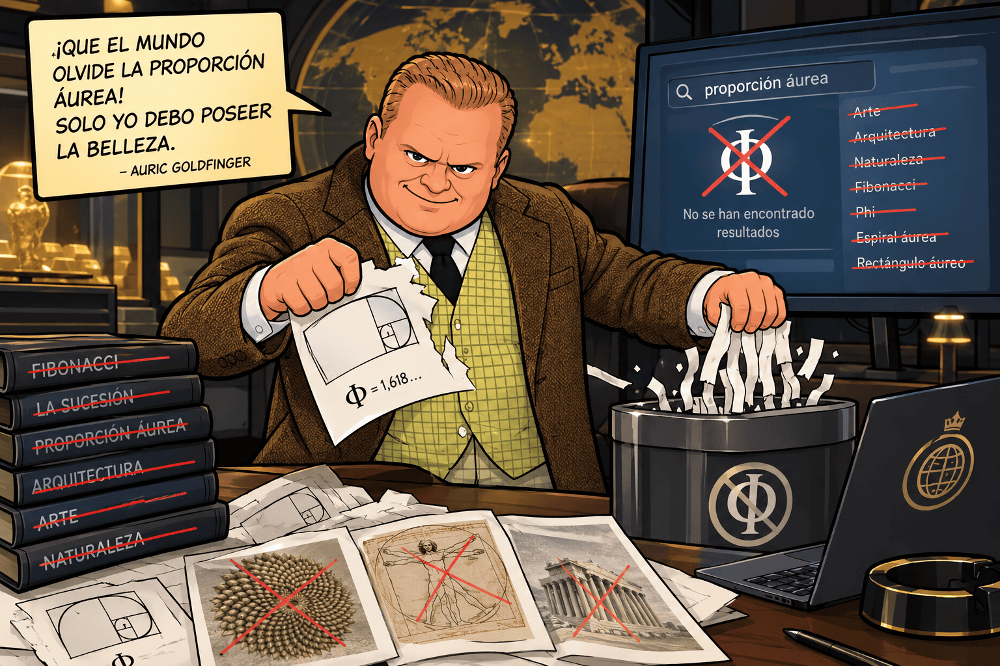
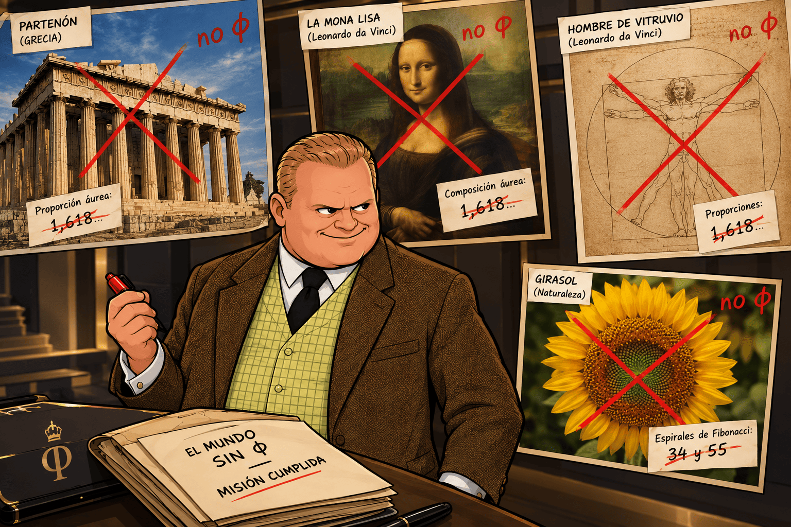
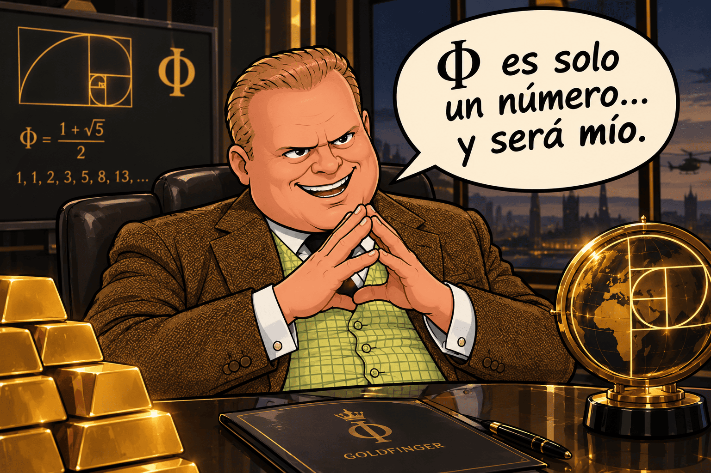
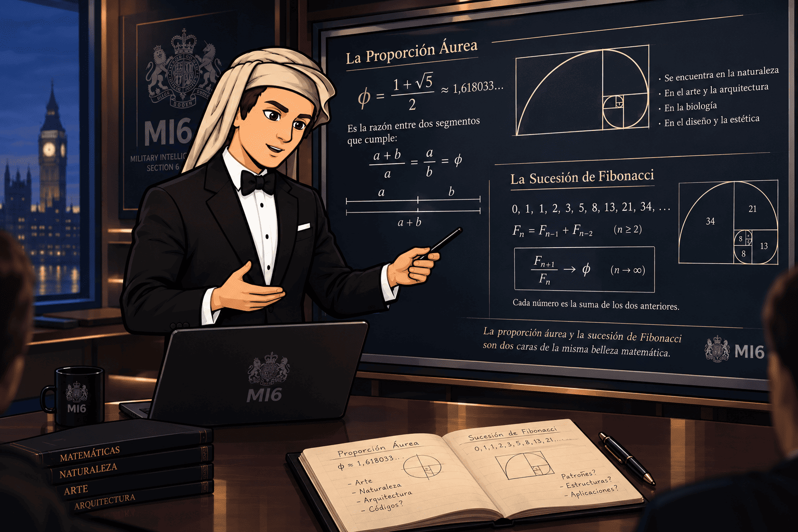
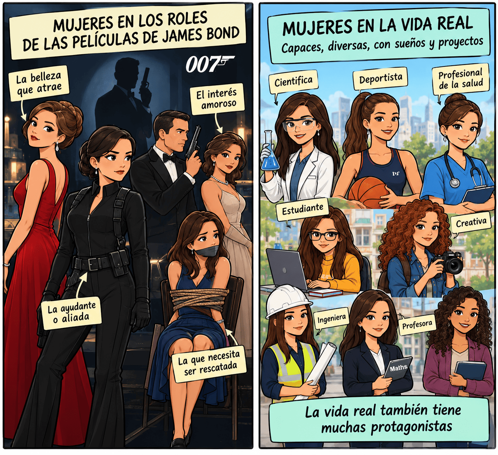

PHASE 1. MOTIVATE – Top Secret File: Goldfinger no longer wants gold
Urgent message from Agent 00Φ
Agents,
What I am about to tell you goes beyond any previous mission. We have intercepted a message from Auric Goldfinger and, for the first time in my career, I think we are dealing with an enemy who has completely lost his mind.
For years, he has dreamed of robbing Fort Knox, taking control of the gold reserves held by central banks and emptying the world's most secure vaults full of gold. But now he believes that all this gold is worthless.
Goldfinger has discovered something that, according to him, is worth far more than all the gold in the world: the golden ratio.
His new and irrational plan is to take control of it and erase all evidence of its presence in art, architecture, design and nature. He wants humanity to forget the connection between the number Φ (Phi), geometric shapes and certain patterns found in nature. He dreams of becoming the only owner of mathematical beauty.
His reasoning is as irrational as it is dangerous: if he can control something that many people associate with harmony and proportions, he will be able to convince the world that beauty belongs to him.
But he has made a mistake.
He does not know that Agent Fibonacci, code name 00Φ, has been investigating his movements for years. And I have no intention of letting him get away with it either.
I need the best teams of young mathematical agents. I need your intelligence, your creativity and, above all, your ability to spot a lie hidden behind a spectacular image.
Signed: Fibonacci, Agent 00Φ.

00Φ's brilliant idea: building a trap that looks like a museum
Goldfinger expects to find valuable objects, works of art and mathematical secrets scattered around the world. He would never suspect that international agencies might decide to bring a selection of evidence together in an apparently harmless place: a school's mathematical museum.
The plan is brilliant for three reasons:
- The museum will contain infographics about works of art and elements of nature connected to the golden ratio and the Fibonacci sequence.
- Each exhibit will include explanations, measurements, calculations and audio guides. Goldfinger will believe he has found the collection he was looking for.
- Once he arrives to steal it, the exhibition will become the setting for a coordinated operation to identify and arrest him.
But there is one condition: if the museum contains false claims or misleading images, Goldfinger might discover the trap. That is why each team must contribute an accurate, well-researched exhibit.
The students' mission: investigate a work of art or an element of nature, show what mathematical connection it really has, and turn it into one of the museum's exhibits.
PHASE 2. ACTIVATE – Red code: International Organisations try to remember the number Φ (Phi)
Intercepted message from Moneypenny, the operation's international contact:
Agents, we have a problem. Goldfinger has started deleting mathematical references from the files we have recovered. Some agencies still remember code Φ (Phi), but we need to refresh your knowledge before the last clues disappear.
Your first mission is to watch some recordings recovered from the agency's files. Pay close attention: they contain information you will need to complete your mathematical training and prepare the trap museum.

Task 1. Recover the lost knowledge
Watch the following videos.
Task 2. Urgent report for the agency
While watching the videos, take notes and answer the following questions in your notebook:
- How do we find each term in the Fibonacci sequence?
- What are the first ten terms?
- What number does the Greek letter Φ represent?
- What happens when we divide a Fibonacci number by the previous one?
- What is the connection between Fibonacci and the golden ratio?
- Which discovery in the videos surprised you the most?
- ¿Cómo se obtiene cada término de la sucesión de Fibonacci?
Example report:
The sequence starts with (1, 1, 2, 3, 5, 8, \ldots). From the third term onwards, each term is found by adding the two previous terms. The ratios between consecutive terms get closer and closer to the golden ratio, which is approximately 1.618034.

Product for this phase: a short individual report with your answers. You do not need to copy everything the videos say; you should select the most important mathematical ideas.
If we have found the videos difficult to understand, or we haven’t understood them at all... don’t panic! Let’s try our best and give it one last go by watching the following video:
The Fibonacci Files: The Golden Math (an audio-described 4-part series)
Qué es la serie de Fibonacci y qué tiene que ver con el número áureo
Lectura facilitada
1. Introducción: El código de la naturaleza
La serie de Fibonacci es una de las secuencias numéricas más famosas de la historia. Se le conoce como “el código secreto de la naturaleza” o la “secuencia divina”, ya que aparece repetidamente en estructuras naturales como los pétalos de un girasol o la cáscara de una piña.
Aparece reflejada en obras populares como la película o libro El código Da Vinci, y guarda una estrecha relación con el número áureo (o proporción divina).
2. El origen y el problema de los conejos
Leonardo de Pisa, conocido como Fibonacci, fue un matemático italiano que en el año 1202 escribió el libro Liber abbaci (“Libro del cálculo”). En esta obra presentó un problema práctico sobre la reproducción de conejos:
El acertijo: Se parte de una pareja de conejos recién nacidos. Tardan dos meses en madurar y, a partir de ese momento, tienen un par de crías (un macho y una hembra) cada mes. Asumiendo que ningún conejo muere, ¿cuántos pares de conejos hay al cabo de un año?
El cálculo mes a mes:
- Mes 1: 1 par (inmaduro).
- Mes 2: 1 par (adulto).
- Mes 3: 2 pares (la primera pareja se reproduce).
- Mes 4: 3 pares.
- Mes 5: 5 pares.
- Mes 12: 377 pares.
La regla para avanzar en la serie es sumar los dos números anteriores (por ejemplo: \(5 + 8 = 13\), \(8 + 13 = 21\)). Al mes 13, la cantidad de parejas ascendería a \(610\) (\(233 + 377\)).
3. Mitos y verdades sobre la secuencia
Aunque la serie se popularizó en el siglo XIX al recibir el nombre de Fibonacci, existen dos grandes aclaraciones sobre su origen y alcance:
No fue inventada por Fibonacci: El registro más antiguo conocido data de entre los años 450 y 200 a. C., en un tratado de métrica del matemático indio Pingala.
No es una regla universal en la naturaleza: Aunque aparece en patrones de crecimiento de plantas (los lirios tienen 3 pétalos, las prímulas 5, los delfinios 8, la hierba de Santiago 13, la achicoria 21 y los girasoles combinan filas de 21, 34, 55, 89, 144 y 233), no aplica a todas las especies ni rige a la naturaleza de forma absoluta.
4. La conexión con el número áureo
Existe un vínculo matemático directo entre la serie de Fibonacci y el número áureo:
Al dividir cualquier número de la secuencia entre el anterior, el resultado se aproxima cada vez más a \(1{,}6180339887\dots\) (representado por la letra griega \(\Phi\)).
Aunque culturalmente se afirma que la proporción áurea resulta naturalmente placentera a la vista y está presente en obras como el Partenón o La última cena de Da Vinci, el matemático Keith Devlin señala que esto tampoco es universal. Los seres humanos simplemente tendemos a reconocer patrones e ignorar lo que los contradice.
5. El verdadero legado de Fibonacci
El mérito principal de Fibonacci no fue la secuencia en sí, sino popularizar el sistema numérico indoarábigo en Europa. Gran parte del Liber abbaci se dedicó a enseñar lo fundamental: escribir las cifras del 0 al 9 y realizar operaciones básicas (suma, resta, multiplicación y división).
Al desplazar el uso del sistema romano y el cálculo manual con ábacos o dedos, Fibonacci ayudó a impulsar el fin de la Edad Media y la modernización del comercio y la ciencia en Europa.
La sucesión de Fibonacci y la razón aúrea
Lectura facilitada
1. Introducción a la sucesión de Fibonacci
Fibonacci es un matemático famoso por su conocida sucesión. La sucesión comienza con el número 1, el segundo número es también un 1, y cada término siguiente se obtiene sumando los dos anteriores (1, 1, 2, 3, 5, etc.).
2. Propiedades de la sucesión y presencia en la naturaleza
Cualquier número entero se puede representar como la suma de números de Fibonacci distintos.
Uno de cada tres términos es par, uno de cada cuatro es múltiplo de tres y uno de cada cinco es múltiplo de cinco.
El máximo común divisor de dos números de Fibonacci cualesquiera es siempre otro número de Fibonacci.
La suma infinita de los números de Fibonacci divididos por las potencias de 10 (\(\frac{F_n}{10^n}\)) da exactamente 10/89.
Aparecen representados en el Triángulo de Pascal y en patrones de la naturaleza como las ramas de los árboles, las escamas de las piñas, las flores de la alcachofa y el árbol genealógico de las abejas (un zángano tiene 1 madre, 2 abuelos, 3 bisabuelos, 5 tatarabuelos, 8 tatatarabuelos, etc.).
3. La Proporción Áurea (\(\phi\))
La razón entre dos partes de un segmento (\(A\) y \(B\)) es áurea cuando la relación entre la parte mayor (\(A\)) y la menor (\(B\)) es igual a la relación entre el total (\(A+B\)) y la parte mayor (\(A\)). Al definir esta relación como \(\phi\) (Phi), resulta la ecuación \(\phi = 1 + \frac{1}{\phi}\), equivalente a \(\phi^2 - \phi - 1 = 0\). La solución positiva a esta ecuación cuadrática da el valor exacto de la razón áurea:
\(\phi = \frac{1 + \sqrt{5}}{2}\).
4. Conexión entre Fibonacci y la Razón Áurea
Al dividir dos números consecutivos de la sucesión de Fibonacci (\(F_{n+1} / F_n\)), conforme más se avanza en la sucesión, el cociente se aproxima exactamente a \(\phi\).
Es posible calcular el enésimo término de Fibonacci en función de \(\phi\) mediante la fórmula de Binet:
\[F_n = \frac{1}{\sqrt{5}} \left( \phi^n - \left(-\frac{1}{\phi}\right)^n \right)\].
Por lo tanto, la sucesión de Fibonacci y la razón áurea son prácticamente dos formas de expresar el mismo concepto matemático.
Lo que nadie sabe de la sucesión de Fibonacci 🤫
Lectura facilitada
Introducción Los números de Fibonacci son objeto de fetichismo para muchos matemáticos, aficionados y gente en general, pero esta sucesión no deja de dar sorpresas. La sucesión empieza de forma inocente con 1 y 1, y continúa sumando los dos números anteriores: 1, 1, 2, 3, 5, 8, 13, 21, 34, 55, etc.. Es famosa por aparecer de manera recurrente en la naturaleza y por su estrecha relación con la proporción áurea.
1. La revista, la asociación y el congreso de Fibonacci
Existe una publicación científica dedicada exclusivamente a esta sucesión llamada la revista Fibonacci, publicada por la Asociación Fibonacci en Canadá, entidad que además organiza un congreso internacional sobre el tema. La revista acumula cientos de artículos y tablas sobre el tema, y su logotipo incluye estrellas pentagonales entrelazadas vinculadas con la razón áurea.
2. Generalizaciones de la sucesión
- Cambio de números iniciales: Si se inicia la serie con dos números cualquiera en lugar de 1 y 1, la sucesión cambia, pero el cociente entre dos números consecutivos sigue tendiendo hacia la razón áurea.
- Tribonacci, Tetranacci y órdenes superiores: Si se suman los últimos 3 números se obtienen los números tribonacci, con 4 los tetranacci, y en general se pueden sumar los \(k\) números anteriores comenzando con \(k-1\) ceros y un 1.
- Extensión a enteros negativos: La sucesión se puede extender hacia los números negativos haciendo que la posición \(-n\) mantenga el mismo valor que en la posición \(n\), pero alternando el signo negativo en las posiciones pares.
- Extensión a números reales: Aplicando la fórmula de Binet, se construyen funciones para valores pares e impares que se combinan en una función continua \(\text{fib}(x)\), coincidiendo exactamente con los números de Fibonacci para todo número entero.
3. Los polinomios de Fibonacci
Existen los polinomios de Fibonacci, definidos recursivamente como \(F_0(x) = 0\), \(F_1(x) = 1\) y \(F_n(x) = x \cdot F_{n-1}(x) + F_{n-2}(x)\). Se utilizan en combinatoria y tienen la propiedad de que, al evaluarse en \(x = 1\), dan exactamente el número de Fibonacci correspondiente.
4. Los números de Lucas
Son una variante construida con la misma regla de suma pero comenzando en 2 y 1: 2, 1, 3, 4, 7, 11, 18, 29, 47, 76, 123.... Tienen aplicaciones destacadas en combinatoria y guardan una relación aún más íntima con la proporción áurea que los propios números de Fibonacci.
5. Solo existen dos cuadrados perfectos en la sucesión
Los únicos números en toda la sucesión de Fibonacci que son cuadrados perfectos son el 1 (\(1^2\)) y el 144 (\(12^2\)), además del 0 si se incluye en la serie. En 1964, el matemático J. H. E. Cohn demostró rigurosamente que entre los infinitos números de Fibonacci no existe ningún otro cuadrado perfecto.
Bonus Track: La gran pregunta sin resolver Aunque existen números de Fibonacci que son primos (como el 2, 3, 5 o 13), en la actualidad nadie en el mundo sabe si existe un número finito o infinito de primos de Fibonacci. Al finalizar el vídeo, se presenta el libro Invitación al aprendizaje, enfocado en cómo la ciencia explica los mecanismos con los que aprendemos.
LA SECUENCIA FIBONACCI ¿LA CLAVE DE LA VIDA?
Lectura facilitada
1. ¿Qué es la secuencia de Fibonacci y qué mitos existen?
- El mito: A menudo se exagera su trascendencia o se le atribuyen explicaciones místicas, considerándola una leyenda urbana o la "secuencia de la vida".
- La realidad: Es una serie numérica muy relevante dentro de las matemáticas que posee propiedades geométricas interesantes.
2. ¿Cómo funciona la secuencia?
- Origen: Surgió como un problema matemático para representar la rapidez con la que crece una población de conejos.
- La regla básica: Cada cifra de la serie se calcula sumando los dos números anteriores.
- La Progresión: La secuencia comienza con 1, 1, 2, 3, 5, 8... y continúa acumulando la suma de los valores previos.
3. La relación con el Número Áureo
- División de términos: Al dividir un número de la secuencia entre el que le precede, el resultado se aproxima de forma progresiva al número áureo (phi).
- Geometría y espirales: Esta proporción está vinculada con la geometría de rectángulos que se prolongan para formar una espiral.
4. Optimización en la naturaleza
- Patrones vegetales: En las piñas, el número de espirales existentes corresponde a una cifra de la secuencia de Fibonacci.
- Evolución: La presencia de las matemáticas en los seres vivos no obedece a magia, sino a que la evolución tiende a optimizar espacio, energía y recursos.
- Otros ejemplos de eficiencia: Las abejas fabrican panales de forma hexagonal porque es la figura geométrica que mejor aprovecha el espacio disponible.
5. Curiosidades del mundo celular y animal
- Comportamiento complejo: Se destacan fenómenos como las migraciones de las aves sin necesidad de mapas o la coordinación social en colmenas y hormigueros.
- Base biológica: Todos los seres vivos funcionan mediante reacciones químicas celulares e impulsos eléctricos en las neuronas.
- Insectos: Se menciona la precisión con la que insectos como las moscas orientan su vuelo, así como los motivos por los que los mosquitos pican preferentemente a ciertas personas debido al olor corporal o al grosor de la piel.
PHASE 3. EXPLORE – The Fibonacci Laboratory: We Need to Decode the Code
Message from Agent 00Φ:
Well done, agents. We have recovered the code, but we still do not know how to use it accurately enough. Goldfinger knows all about spectacular images; we must understand the mathematics behind them.
I need you to master two tools: the Fibonacci recurrence relation and the connection between its terms and the number Φ (Phi). Without them, our evidence will not be scientifically reliable.


Task 3. Decode the recurrence relation
The Fibonacci sequence is defined by the following conditions:
\(F_1=1,\qquad F_2=1\)
\(F_n=F_{n-1}+F_{n-2} \quad(n\geq3) \)
This last expression is a recurrence formula: it allows us to find each term by using the two previous terms.
Your mission:
- Calculate the first twelve terms of the sequence.
- State which two terms you used to find each new term.
- Calculate the ratios \(F_3/F_2\), \(F_4/F_3\), \(F_5/F_4\), and so on, up to \(F_{12}/F_{11}\).
- Compare the results with \(1{,}618034\).
- Write a conclusion about how the ratios change.
You can organise your results in this table:
| \(n\) | \(F_n\) | Cociente \(F_n/F_{n-1}\) |
| 1 | 1 | — |
| 2 | 1 | 1 |
| 3 | 2 | 2 |
| 4 | 3 | ... |
| 5 | 5 | ... |
| 6 | 8 | ... |
| 7 | 13 | ... |
| 8 | 21 | ... |
| 9 | 34 | ... |
| 10 | 55 | ... |
| 11 | 89 | ... |
| 12 | 144 | ... |
Question to investigate: Why is the ratio not always equal to Φ (Phi), even though it gets closer and closer to this number?
Task 4. The general formula: the final code for Φ (Phi)
The agency has recovered a formula that allows us to calculate any Fibonacci term directly, without adding all the previous terms. It is known as Binet's formula:
\(F_n=\dfrac{\Phi^n-(1-\Phi)^n}{\sqrt5}\)
where
\( \Phi=\dfrac{1+\sqrt5}{2} \)
Your mission:
- Calculate the approximate value of \(\Phi\).
- Check the formula for \(n=1\) and \(n=2\).
- Use a calculator to check the result when \(n=5\).
- Compare the result with the fifth term of the Fibonacci sequence calculated using the recurrence relation.
- Explain why having a general formula is useful.
Remember that the expression \(1-\Phi\) is negative. When raised to high powers, its absolute value becomes smaller and smaller, so the formula gets closer to:
\(F_n\approx\dfrac{\Phi^n}{\sqrt5}\)
Tip from Agent 00Φ: Do not confuse a recurrence formula, which needs previous terms, with a general formula, which allows you to calculate a term directly from its position in the sequence.
Product for this phase: the Fibonacci table, the calculated ratios and the check of the general formula. This material will be your mathematical file for the final project.
Where does the formula for the general term of the Fibonacci sequence come from?
El término general de la sucesión de Fibonacci se puede calcular mediante la fórmula de Binet.
1. Sucesión de Fibonacci
La sucesión es:
\( 0,\ 1,\ 1,\ 2,\ 3,\ 5,\ 8,\ 13,\ 21,\ldots \)
Cada término se obtiene sumando los dos anteriores:
\( F_n=F_{n-1}+F_{n-2} \)
con \(F_0=0\) y \(F_1=1\).
2. Calculamos el término general
Buscamos una solución de la forma \(F_n=r^n\). Sustituimos en la recurrencia:
\( r^n=r^{n-1}+r^{n-2} \)
Dividimos entre \(r^{n-2}\):
\( r^2=r+1 \)
Obtenemos la ecuación de segundo grado:
\( r^2-r-1=0 \)
Aplicando la fórmula general:
\( r=\dfrac{1\pm\sqrt{5}}{2} \)
Por tanto, las dos soluciones son:
\( r_1=\dfrac{1+\sqrt5}{2}=\varphi \)
\( r_2=\dfrac{1-\sqrt5}{2} \)
3. Fórmula del término general
Combinando ambas soluciones y utilizando las condiciones iniciales, obtenemos la fórmula de Binet:
TÉRMINO GENERAL DE FIBONACCI
\( \boxed{F_n=\dfrac{1}{\sqrt5} \left[ \left(\dfrac{1+\sqrt5}{2}\right)^n - \left(\dfrac{1-\sqrt5}{2}\right)^n \right]} \)
Esta fórmula permite calcular cualquier término sin tener que calcular todos los anteriores.
Es otra forma de escribir la expresión anteriormente vista:
\(F_n=\dfrac{\Phi^n-(1-\Phi)^n}{\sqrt5}\)
¡Qué fuerte! Son un conjunto de operaciones de números irracionales que al elevarlos a potencias naturales, dan números naturales. ¡Ahora entiendo por qué Auric Goldfinger quiere robar todo lo que tenga que ver con la proporción áurea!
4. Ejemplo: calcular \(F_6\)
Sustituimos \(n=6\):
\( F_6=\frac{1}{\sqrt5} \left[ \left(\frac{1+\sqrt5}{2}\right)^6 - \left(\frac{1-\sqrt5}{2}\right)^6 \right] \)
Al simplificar, obtenemos:
\( \boxed{F_6=8} \)
En efecto, la sucesión es \(0,1,1,2,3,5,8\).
Nota: si tu sucesión empieza por \(F_1=1\) y \(F_2=1\), la misma fórmula funciona usando \(F_n\) con \(n\geq 1\), pero los índices quedan desplazados una posición respecto a la convención que empieza en \(F_0=0\).
PHASE 4. STRUCTURE: The Secret of Φ (Phi) and the spiral that must not fall into Goldfinger’s hands
Agent Fibonacci sends an encrypted message to the teams:
"Agents, Goldfinger believes that the golden ratio is just a mysterious number. Let us show him that it is a mathematical structure that can be written in different ways. If you work out how these forms are connected, you will be able to recognise its clues and tell real evidence from fake evidence.”

Task 5. The number Φ (Phi) under interrogation
The MI6 team supporting Agent 00Φ in the fight against Goldfinger has questioned the number Φ (Phi). The aim is to find out as much as possible about Φ so that we can use it safely as bait. This is what the number has told us:
1. Dividing a line in the golden ratio

A line segment is divided in the golden ratio when the ratio between the whole segment and the longer part is equal to the ratio between the longer part and the shorter part.
If we call the longer part \(a\) and the shorter part \(b\), with \(a>b>0\), we have:
\( \dfrac{a+b}{a}=\dfrac{a}{b}=\Phi \)
To find this ratio, we write:
\( \dfrac{a}{b}=\Phi \quad\Longrightarrow\quad a=\Phi b \)
We substitute this into the first equality:
\( \dfrac{\Phi b+b}{\Phi b}=\Phi \)
Simplifying gives:
\( \dfrac{\Phi+1}{\Phi}=\Phi \quad\Longrightarrow\quad \Phi^2=\Phi+1 \)
So, by solving the equation \(x^2-x-1=0\), we get:
\( \boxed{\Phi=\frac{1+\sqrt5}{2}\approx1{,}618034} \)
We ignore the negative solution because a length and a positive ratio cannot be negative.
Agent challenge: If the shorter part is 10 cm long, approximately how long is the longer part? And what is the length of the whole segment?
Expected answer: \(a\approx16{,}18\) cm and \(a+b\approx26{,}18\) cm.
2. The infinite continued fraction
The golden ratio can also be written as a continued fraction:
\( \boxed{\Phi=1+\cfrac{1}{1+\cfrac{1}{1+\cfrac{1}{1+\cdots}}}} \)
Why? Because it follows this rule:
\( \Phi=1+\dfrac{1}{\Phi} \)
If we repeatedly replace \(\Phi\) with \(1+\dfrac1\Phi\), we get the infinite structure of the continued fraction.
We can find approximate values by stopping the expression at different points:
\( 1,\quad 1+\dfrac11=2,\quad 1+\dfrac{1}{1+1}=\dfrac32 \)
Continuing gives approximations such as:
\( \dfrac32,\quad\dfrac53,\quad\dfrac85,\quad \dfrac{13}{8},\quad\dfrac{21}{13},\ldots \)
Notice that these fractions are related to consecutive Fibonacci numbers and that their values get closer to \(1{,}618034\).
Agent challenge: Use a calculator to work out \(\dfrac{21}{13}\) and compare it with \(\Phi\). What difference do you notice?
3. Nested square roots
Another surprising way to represent the golden ratio is:
\( \boxed{\Phi=\sqrt{1+\sqrt{1+\sqrt{1+\sqrt{1+\cdots}}}}} \)
This expression is a square root containing another square root, which contains another one, and so on.
To understand the idea, let us call the value of the infinite expression \(x\). Since the same structure repeats inside the square root:
\( x=\sqrt{1+x} \)
Squaring both sides gives:
\( x^2=1+x \)
Once again, we arrive at the equation associated with the golden ratio:
\( x^2-x-1=0 \)
Its positive solution is:
\( \boxed{x=\frac{1+\sqrt5}{2}=\Phi} \)
Agent challenge: Explain why the expression with nested square roots leads to the same equation as dividing a line in the golden ratio.
Teacher's note: Infinite continued fractions and nested square roots are understood as limits. At 4th ESO, students only need to recognise the structure and explain the related equation. A formal proof that these expressions converge is not required.
4. The other mathematical clues
- Exact and approximate value: \(\displaystyle\Phi=\frac{1+\sqrt5}{2}\approx1{,}618034\).
- Key property: \(\Phi^2=\Phi+1\).
- Reciprocal relationship (dividing the key property by \(\Phi\) gives: \(\displaystyle\Phi=1+\frac1\Phi\).
- Golden rectangle: the ratio between the longer side and the shorter side is \(\Phi\).
- Two golden rectangles are identical in shape if they have the same ratio between their longer and shorter sides. One way to check whether two rectangles are golden rectangles is to place them as shown below: if the diagonal of the first continues in a straight line through the second, they may have the golden ratio.

- Fibonacci sequence: the ratio between consecutive terms gets closer to \(\Phi\), although it is not exactly equal to (\Phi\) at each step.
- Golden spiral and Fibonacci spiral:
these spirals are related, but they are not exactly the same curve. The spiral made from quarter-circle arcs inside Fibonacci squares is an approximation of the golden spiral.
The golden spiral is defined using the golden ratio, while the Fibonacci spiral is drawn using arcs inside squares whose side lengths follow the Fibonacci sequence. As a result, it gets closer to the shape of a golden spiral.
.

Golden spirals are self-similar. This means that the same shape repeats as we enlarge it. |

|
Challenge 6. Draw the Fibonacci spiral
Message from 00Φ:
“Agents, Goldfinger has left a clue hidden in a spiral. To decode it, you must build the spiral yourselves. Only those who understand the Fibonacci sequence will be able to reconstruct its path. Get your ruler, pencil and squared paper ready!”
Mission: Draw a Fibonacci spiral on squared paper by following these steps.
- Calculate the sequence. Write the first terms: \(1,1,2,3,5,8,13,\ldots\).
- Draw the squares. On your squared paper, draw squares with sides of 1, 1, 2, 3, 5, 8 and 13 squares. Place each square next to the previous one so that they form a growing rectangle.
- Draw the arcs. Inside each square, use a compass to draw a quarter-circle arc connecting two opposite corners. Always follow the same direction of rotation. The arcs should join together to form a continuous spiral.
- Identify the clue. Colour the spiral, label the side lengths of the squares and write the Fibonacci sequence next to it.
- Answer the questions. In two or three sentences, explain how the sizes of the squares are related to the sequence and why this spiral is an approximation of the golden spiral rather than exactly the same curve.
Evidence to hand in: your completed drawing, with the side lengths of the squares labelled and a short mathematical explanation.
Success criteria
- The squares follow the Fibonacci sequence.
- The squares are placed next to each other in a logical way.
- The arcs form a continuous spiral.
Tip from 00Φ: Each new Fibonacci term is found by adding the two previous terms. Geometry can hide mathematical secrets too!
End-of-phase story
00Φ sends the final instruction:
"You now know different ways to write the code: as a geometric ratio, an equation, a continued fraction and a nested square root. But be careful, agents: finding a ratio close to 1,618 does not, by itself, prove that an artist or nature deliberately used it. To catch Goldfinger, we will need calculations, reliable measurements and sources that can stand up to questioning.”
In this way, the mathematical properties are linked to the museum trap mission. Each team must contribute an exhibit and verifiable mathematical evidence, rather than simply claiming that something follows the golden ratio because a website says so.

PHASE 5. APPLY: The perfect trap: Build the museum Goldfinger won’t be able to resist
Urgent message from 00Φ:
“Agents, I now know how we will capture Goldfinger.
We will not try to chase him around the world. We will offer him exactly what he wants: a museum bringing together some of the most fascinating works of art, shapes and patterns connected to Phi and Fibonacci.
When he discovers the collection, he will think he can finally steal the secret of beauty. He will not realise that every exhibit will include mathematical evidence, an explanation and an audio guide. The entire museum will be our trap.
I need one exhibit from each team. A work of art or an element of nature. Real research. An infographic that nobody can challenge with a simple question. And an audio guide explaining the discovery.
You will carry out this mission outside the classroom. I will not ask you to build a huge physical museum: each team only needs to prepare a digital or printable exhibit to add to the group exhibition.
The museum will be made up of your infographics and their audio guides. It will be an irresistible collection for Goldfinger and, at the same time, a scientific exhibition that any visitor can understand.”

Task 8. Setting up the team of agents
For the operation to succeed, each team needs a clear structure. All four roles must be covered, although in teams of three, the roles of Q and Moneypenny can be combined.
- M — Mission leader: Organises the work, shares out the tasks, keeps track of deadlines and makes sure everyone takes part. The mission leader does not do all the work; they coordinate the team.
- Q — Evidence and records officer: Acts as the team secretary. Records decisions, organises sources, keeps the calculations and makes sure the research documents are well organised.
- Moneypenny — Contact with the teacher: Communicates the team's questions to the teacher, passes on instructions, checks the submission requirements and makes sure the final work is handed in on time.
- Field agent — Visual research officer: Searches for and analyses images, suggests measurements and checks that the infographic represents the data correctly. Works with Q to check the research.
Every team member must take part in the calculations, review and create the infographic, and understand the conclusion. The roles help organise the work, but they do not mean that the project should be divided into separate tasks with no teamwork.
Product for this activity: a team record listing the members' names, their roles and the agreed communication method.
If your class already has groups assigned for group activities, you will work in those groups, so you will only need to decide who takes each role.
Task 9. The final mission: an exhibit for the trap museum
Message from Goldfinger intercepted by the agency
"At last, I have found what I was looking for! I have been told that a school is putting together an extraordinary collection of mathematical proportions, shapes and patterns.
I am sure its young researchers will not be able to tell a real golden ratio from a simple coincidence. When the time comes, I will take the entire collection.
And then beauty will be mine!”
— Auric Goldfinger.
Immediate message from 00Φ:
Perfect! He has taken the bait.
Agents, now you must prepare your exhibit. Each team will choose a work of art or an element of nature, investigate its connection with the golden ratio or the Fibonacci sequence, and create an infographic accompanied by an audio guide.
You do not need to find both connections in the same exhibit. You can investigate the golden ratio, the Fibonacci sequence or both, as long as you explain your findings accurately.
Your work will become part of the museum we will use as a trap. The better documented the exhibits are, the more convincing the exhibition will be.
Your mission
Team mission: “One exhibit, one piece of evidence, one audio guide”.
If you find it difficult to organise your work, I suggest clicking on the button “Recommended intermediate products for creating the final product” and considering whether to follow the steps suggested there.
Task 10. Quality control: the agency's review
Before leaving the agency's headquarters, each team must carry out a quality check of its mission.
Instructions
Review your research plan and answer the following questions:
- Have we chosen a specific exhibit?
- Do we know what we are going to measure or count?
- Can we explain how to calculate the ratio or identify the pattern?
- Do we have a reliable source for the main information?
- Can we create an image that clearly shows the mathematical connection?
- Do we know what we are going to explain in the audio guide?
- Have we shared out the responsibilities?
- Do we know what Moneypenny must submit and by what deadline?
If any answer is no, improve your plan before leaving the classroom.
The question that could save the operation
Each team must complete this sentence:
“Our exhibit will be __________. We will investigate __________ by using __________. If we find a mathematical connection (you can choose which connection related to the topic), we will show it in the infographic using __________. If we do not find enough evidence, we will explain __________.”
Example:
"Our exhibit will be a sunflower. We will investigate the possible connection between its spirals and the Fibonacci sequence by counting the spirals in both directions. If we find a pattern that matches the sequence, we will show it in the infographic using arrows and numbers. If we do not find enough evidence, we will explain the actual results without changing them."
Product for this task: a final work plan approved by every team member.
As completing a big task can sometimes be difficult, we are going to break it down into smaller parts. These smaller products fit together like pieces of a puzzle. If you create them all, step by step, you will gradually build the final product.
Product 1. The Research
Find reliable information about your chosen object. Decide what you want to check, choose the measurements or counts you need, and calculate the mathematical ratio.
You must explain whether you have found a ratio close to Phi, a pattern related to Fibonacci, both, or neither.
Product 2. The Infographic
Design a clear and attractive infographic that includes a title, an image of the object, measurements or counts, calculations, geometric annotations, a conclusion, and sources.
A visitor should be able to understand what you have investigated and what you have shown.
Product 3. The Audio Guide
Record a spoken explanation lasting between 1 and 2 minutes. Introduce the object, explain the calculations, and present your conclusion.
The audio must match the infographic and be accessible through a link or a QR code.
Product 4. The Evidence File
Submit a short document containing the research question, the method, the calculations, the conclusion, and the sources you consulted.
Compulsory Requirements
Your research must focus on a work of art or an element of nature.
- Images must come from identifiable sources.
- Calculations must be correct and clearly explained.
- The annotations on the infographic must show what you have measured or counted.
- The conclusion must distinguish between what you have proved and what you only suspect.
- The audio guide must last between 1 and 2 minutes.
- All team members must contribute to the research and understand the results.
- The infographic and audio must be ready to be included in the museum.
Submission format: an infographic file in PDF or image format, an audio file or link, and a short document containing the research and references.
Moneypenny will check that all the files can be opened and that the submission is complete.
How to organise your work outside the classroom
To make sure the project is manageable, divide the tasks between team members and agree on an internal review deadline.
PHASE 6. CONCLUDE / EVALUATE: The final message before entering enemy territory
Final Transmission from 00Φ
Agents, time is running out. Your research is underway, and the museum is beginning to take shape.
Goldfinger thinks he will find a collection of beautiful images. He has no idea that behind each exhibit there will be a team able to explain the measurements, justify the calculations, and spot false claims.
That will be our advantage. We do not need every artwork to follow the golden ratio or every spiral to follow Fibonacci. We need every piece of evidence to be honest, and we must be able to explain what it means.
The operation continues outside the classroom. Make sure everyone knows their task, M has organised the plan, Q has kept the evidence safe, and Moneypenny knows how and when the work will be submitted.
Mission briefing
Before the end of the lesson, each team must give the teacher a spoken update lasting no more than one minute. It must explain:
- Which object you have chosen.
- Which mathematical relationship you are going to investigate.
- Which final product you will create.
- How you have shared out the responsibilities.
- Which question you need to answer before continuing.
The teacher can guide your research if the chosen object does not allow you to carry out a reasonable mathematical check.

Results report: Do we deserve to join the Agency?
Assessment is also part of the story. Before Moneypenny submits the final file, agents must check the quality of their own work and assess how well their teammates have worked together.
Agent self-assessment
Before closing your file, think about what you have learnt. Answer the questions honestly and give specific examples.
- What have I learnt about the number Phi and the Fibonacci sequence?
- Which calculation or mathematical property can I explain?
- What task have I completed to help create the museum?
- What difficulty did I face during the research?
- Did I check the sources and results before accepting a claim?
- What would I change if I did the mission again?
Example:
“I have learnt that the ratios between consecutive Fibonacci numbers get closer to the golden ratio. My task was to check the measurements and review the infographic. At first, I accepted a claim without checking it, but then we looked for additional sources. In another project, I would check the dimensions before designing the image.”
What you must submit: an individual reflection of about 100–150 words.
Peer assessment: M’s confidential report
M needs to know how each team member has worked. Each agent must assess the other members of the team based on their actual contribution.
For each team member, give a score from 1 to 4 for each area.
- Responsibility
- Does not complete tasks.
- Completes tasks sometimes.
- Usually completes tasks.
- Completes tasks and helps organise the work.
- Teamwork
- Hardly takes part.
- Takes part irregularly.
- Usually works well with others.
- Encourages everyone to work together.
- Mathematical Accuracy
- Does not check the results.
- Often needs help.
- Checks the results.
- Checks the results and helps correct mistakes.
- Communication
- Does not listen to other people's ideas.
- Finds it difficult to accept suggestions.
- Listens and shows respect.
- Listens, gives reasons for ideas, and helps the team reach agreements.
Then complete these two sentences:
- “One contribution this teammate has made to help the mission is…”
- “To improve on the next mission, I would recommend…”
Peer assessment must be respectful and based on facts. It is not about rewarding friends or punishing disagreements. The teacher will compare the assessments with evidence from the work.
What you must submit: one peer-assessment form for each teammate.
Moneypenny’s final audit
Moneypenny must make sure the team has not left out any evidence. Before sending the file to the teacher, she will check the following list.
Final operation checklist
- The object is clearly identified, and the sources can be checked.
- The research explains what has been measured or counted.
- The calculations are correct and clearly explained.
- The infographic shows the measurements or patterns investigated.
- The conclusion distinguishes between results and hypotheses.
- The infographic includes references and image credits.
- The audio guide lasts between 1 and 2 minutes and can be heard clearly.
- All team members have reviewed the final product.
- Every agent has completed their self-assessment and peer assessment.
- All files open correctly and are ready to submit.
Moneypenny will be responsible for submitting the work, but every team member must make sure the file is complete.

Meet Fibonacci – The man behind the legend
Fibonacci: The mathematician who discovered a fascinating pattern
Did you know that a sequence of numbers can help us investigate mathematical patterns found in nature? One of the best-known mathematicians associated with a sequence like this was Leonardo of Pisa, whom we now call Fibonacci.
Fibonacci was born around 1170 in Pisa, a city in what is now Italy. When he was young, he travelled with his father to North Africa, where he came into contact with other cultures and learnt new ways of doing calculations. This experience was very important for his education because he discovered mathematical methods that were not yet widely used in Europe.
At that time, doing mathematical calculations could be difficult. In 1202, Fibonacci wrote a book called Liber abaci, which means Book of Calculation. In it, he explained how to use the Hindu-Arabic number system, with the digits from 0 to 9 and a value for each digit depending on its position. This system made calculations more practical than other methods used in Europe at the time. The book also included problems about trade, prices, profits and exchanging money. His work helped spread these calculation methods throughout Europe.
But Fibonacci is especially famous for a numerical sequence that appears in this book as part of an imaginary problem about rabbits reproducing. The question was: if we start with one pair of rabbits and certain breeding conditions are met, how many pairs will there be after several months?
When we solve the problem, we get this sequence:
1, 1, 2, 3, 5, 8, 13, 21, 34, 55, 89…
Can you work out the rule? Each number is found by adding the two previous numbers. For example, \(5+8=13\) and \(8+13=21\). This is known as the Fibonacci sequence.
Fibonacci also wrote other important books about geometry, algebra and the properties of numbers. His work was recognised in his city, and he received a reward for his mathematical services.
Although we now associate his name with the Fibonacci sequence, it is important to understand that he did not invent all this knowledge from scratch. Mathematicians from different cultures had already developed ideas and methods that Fibonacci learnt about, studied and helped to spread. His great achievement was to learn from different mathematical traditions, bring this knowledge together and explain how it could be used to solve real-life problems.
Many centuries later, the sequence continues to attract interest. It is studied in mathematics, and researchers investigate its relationship with some patterns found in nature. Also, when we divide certain consecutive numbers in the sequence, the results get closer and closer to a special number: the golden ratio, represented by the Greek letter (\Phi\), whose approximate value is 1,618.
However, not everything we see in nature or art follows this pattern exactly. To check whether a mathematical relationship exists, we need to observe, measure and analyse the evidence.
Fibonacci’s story teaches us that mathematics is not just about memorising formulas. It is also about asking questions, looking for patterns, learning from others and checking whether our ideas are correct.

For class discussion
James Bond, Women and Equality: Has the Role of Women in Films Changed?
Imagine you are watching a James Bond film. The main character is an intelligent, brave and attractive spy who can deal with extremely dangerous situations. He usually has access to the most advanced technology, drives incredible cars and always seems to be in control. But what about the women around him?
For many years, women in James Bond films have often been presented mainly in terms of their beauty, physical attractiveness or romantic relationship with the main character. Some appear as assistants, others as love interests, and others as characters who need to be rescued. Sometimes, they are even known by nicknames or names that draw attention to their physical appearance. Meanwhile, James Bond is usually the one who makes the important decisions, leads the mission and saves the day.
But does this mean that women are less intelligent, brave or capable than men? Of course not! Films partly reflect the society and ideas of the time in which they were made. That is why, when we watch older films, we may find gender stereotypes: simplified ideas about what men and women should be like, how they should behave or what roles they should have.
Over time, cinema has changed, and some female characters in the series have gained more prominence, independence and decision-making power. However, it is still important to ask ourselves whether these changes are enough and how women are represented in films today.
Equality does not mean that all characters must be the same. It means that they should have the same opportunities to show what they can do, make decisions and be treated with respect. A woman can be intelligent, funny, brave, a leader or a technology expert, just like a man. And a man does not have to prove his masculinity by always being strong, dominant or invulnerable.
So, before we begin our mission, let’s put on the glasses of a secret agent who knows how to look beyond appearances. It is not enough to focus on who wins the fight or who manages to escape. We must also analyse who gets to speak, who makes the decisions, who receives recognition, and what image of women and men the story conveys.
The question is: if James Bond represents the ideal spy, what place do women have in his world? Are they the main characters in their own stories, or do they mainly appear to accompany him? And, above all, has our understanding of equality changed as much as cinema has?

These questions can be discussed after reading the text, in pairs or small groups:
- What characteristics are usually associated with James Bond? Do we expect a hero to always be strong, brave and dominant?
- How are women represented in older James Bond films? Do they have their own goals, or do they depend on the main character?
- Do you think too much importance is given to the beauty and physical appearance of female characters? Why?
- Can a film entertain us and, at the same time, convey unfair ideas about women or men?
- What differences would you expect to find between an older James Bond film and a more recent one?
- What would a more equal James Bond film look like, with women and men both playing important roles?
- What responsibility do films and TV series have when it comes to representing equality?
Final Challenge for Students: A good secret agent is not fooled by appearances. Can you spot gender stereotypes and distinguish between how women are represented in a film and what women are really like in real life?
Vocabulary
| English | Español | Definition in English |
| Approximation | Aproximación | A value that is close to the exact value. |
| Calculate | Calcular | To find an answer using mathematics. |
| Consecutive numbers | Números consecutivos | Numbers that follow one another in order. |
| Convergence | Convergencia | The process of getting closer and closer to a value. |
| Decimal number | Número decimal | A number that has a decimal point. |
| Equation | Ecuación | A mathematical statement that contains an equals sign. |
| Evidence | Evidencia / prueba | Information that helps us support a mathematical claim. |
| Fibonacci sequence | Sucesión de Fibonacci | A sequence in which each number is the sum of the two previous numbers. |
| Formula | Fórmula | A mathematical rule written using symbols. |
| Fraction | Fracción | A number that represents part of a whole or a division. |
| Golden angle | Ángulo áureo | An angle of approximately 137.5 degrees, related to the golden ratio. |
| Golden ratio | Razón áurea | A special number, approximately 1.618, represented by the Greek letter Φ (phi). |
| Golden rectangle | Rectángulo áureo | A rectangle whose side lengths are in the golden ratio. |
| Golden spiral | Espiral áurea | A spiral whose size increases according to the golden ratio. |
| Hypothesis | Hipótesis | An idea or explanation that we can test. |
| Irrational number | Número irracional | A number that cannot be expressed as a fraction of two integers. |
| Length | Longitud | The measurement of how long something is. |
| Mathematical pattern | Patrón matemático | A regularity or rule that can be identified in numbers or shapes. |
| Measurement | Medición | The process of finding the size or length of something. |
| Numerator | Numerador | The top number in a fraction. |
| Proportion | Proporción | A relationship between quantities, often expressed as an equality of ratios. |
| Ratio | Razón | A comparison between two quantities by division. |
| Recurrence relation | Relación de recurrencia | A rule that defines each term using previous terms. |
| Rectangle | Rectángulo | A quadrilateral with four right angles. |
| Sequence | Sucesión | An ordered list of numbers following a rule. |
| Square | Cuadrado | A quadrilateral with four equal sides and four right angles. |
| Square root | Raíz cuadrada | A number that, when multiplied by itself, gives the original number. |
| Term | Término | A number or element in a sequence. |
| Theorem | Teorema | A mathematical statement that has been proved. |
| Value | Valor | The numerical amount represented by a number or expression. |
| Verify | Comprobar / verificar | To check whether something is correct. |
Useful expressions for your investigation
- The ratio is approximately 1,618. — La razón es aproximadamente 1,618.
- The next term is the sum of the two previous terms. — El siguiente término es la suma de los dos anteriores.
- We measured the object and calculated the ratio. — Medimos el objeto y calculamos la razón.
- Our hypothesis is supported by the evidence. — Nuestra hipótesis está respaldada por las pruebas.
- The measurements do not confirm the golden ratio. — Las mediciones no confirman la razón áurea.
- This pattern is an approximation, not an exact golden spiral. — Este patrón es una aproximación, no una espiral áurea exacta.
- We need reliable sources to support our conclusions. — Necesitamos fuentes fiables para respaldar nuestras conclusiones.
Mission tip: As secret agents investigating the golden ratio, remember that finding a pattern is only the beginning: you must measure, calculate and check the evidence before drawing a conclusion.
Communication: Mathematics in English
During this mission, we will use English to investigate Fibonacci and the golden ratio, explain mathematical calculations, share ideas with our teammates and present our discoveries.
To help us communicate, we will learn technical vocabulary such as Fibonacci sequence, golden ratio, ratio, measurement, pattern, hypothesis and evidence. We will also practise useful expressions to explain our work, such as “The ratio is calculated by…”, “According to our measurements…” and “Our results show that…”.
We will use the following expressions to discuss our ideas and debate with our teammates:
- Giving opinions: I think that…; In my opinion…; I believe that…
- Agreeing: I agree with you because…; That's a good point; You're right because…
- Disagreeing politely: I see your point, but…; I’m not sure I agree because…; I have a different opinion.
- Asking for explanations: What do you think?; Why do you think so?; Could you explain your reasoning?; Can you give us an example?
- Giving reasons and evidence: Because…; The evidence shows that…; According to our source…; Our measurements suggest that…
- Comparing ideas: Both ideas are similar because…; However…; On the other hand…; Unlike the first example…
- Making suggestions and reaching agreements: Why don't we…?; We could try…; I suggest that we…; Shall we check another source?; I think we should agree on…
- Expressing uncertainty: It might be…; It seems that…; We are not sure because…; We need more evidence to confirm this.
- Drawing conclusions: To sum up…; Therefore…; Our conclusion is that…; We can/cannot confirm our hypothesis because…
We will use English to ask questions, discuss our hypotheses, compare results, check reliable sources and explain our conclusions in the infographic and the audio guide. We will also learn to listen to different opinions, justify our arguments and recognise when the evidence is not enough to confirm a mathematical relationship.
Remember, agents: observe carefully, calculate accurately, listen to your teammates, check the evidence and communicate your discoveries clearly!